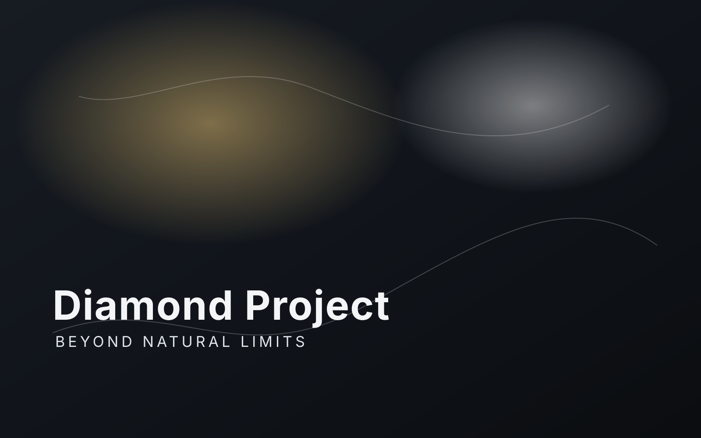

Diamond Project
Beyond natural limits of diamond processing.
The focus here is on tools, methods, and experiments that may allow more freedom when shaping diamond materials for multiple industries.
Problem
Directional hardness
Traditional limits in diamond processing restrict freedom of form and make some operations difficult or expensive.
Approach
Tool development
The project documents real experiments, failed attempts, working methods, and the search for more flexible processing tools.
Vision
Industrial and artistic use
Success here could support jewelry, engineering applications, and broader design opportunities built on processed diamond material.